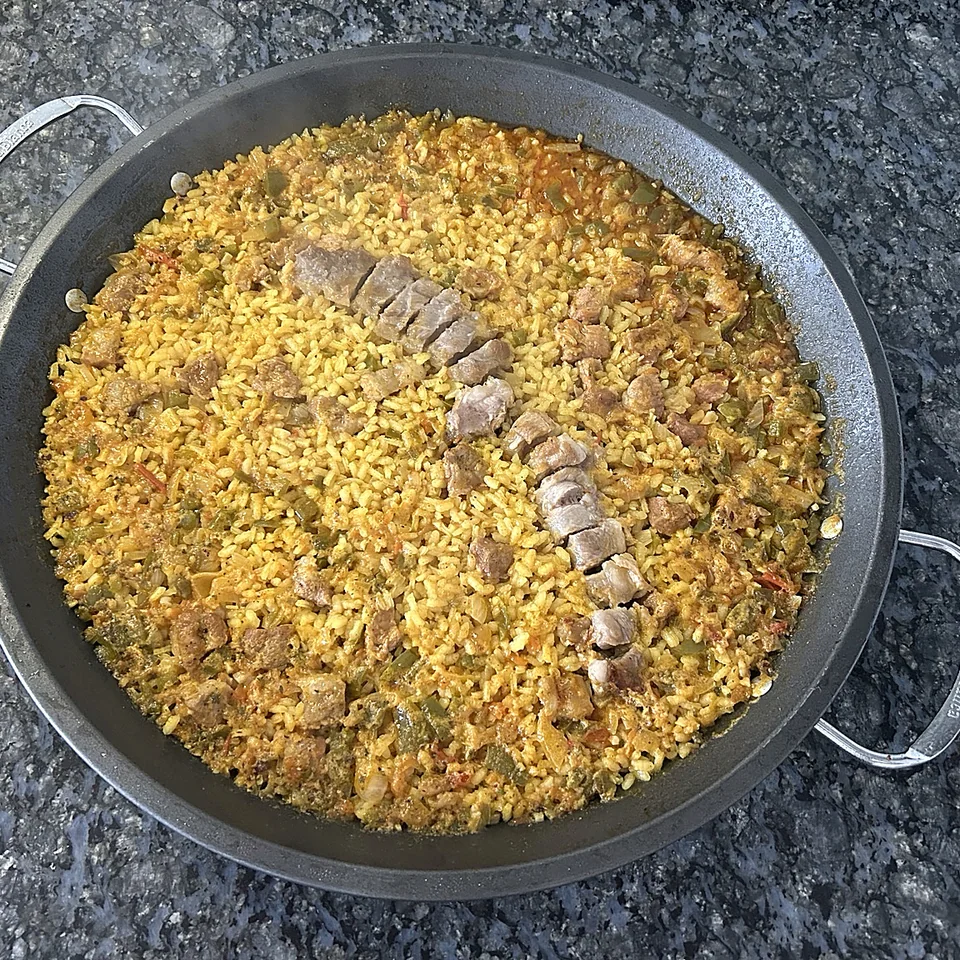

Arroz seco de lagarto ibérico
Arroz seco con sofrito de pimiento verde, caldo casero y picada catalana, terminado con medallones de lagarto ibérico.
- Tiempo total
- 1 h 10 min aprox.
- Preparación
- 25 min
- Cocción
- 40 min + 5 de reposo
- Raciones
- 4 raciones aprox.
- Dificultad
- Media

Ingredientes
4 raciones aprox.
Marca lo que ya tienes.
¿No sabes preparar la picada? Aprende a hacerla paso a paso.
Para este arroz se utilizaron 400 ml de arroz por 1.300 ml de caldo. La absorción depende del fuego y de la paellera.
Preparación
- Preparar y dorar el lagarto. Corta una pieza de lagarto ibérico en dados pequeños, salpimenta y dórala en la paellera con aceite de oliva a fuego vivo. Retira y reserva. Deja los jugos en la paellera.
- Hacer el sofrito. En la misma paellera, cocina la cebolla y el pimiento verde finamente picados durante 10–12 minutos a fuego medio-bajo. Incorpora el ajo picado y cocina 1 minuto. Añade el tomate rallado y sofríe 7–8 minutos más, hasta que quede bien reducido.
- Concentrar el sabor. Añade el pimentón dulce, remueve unos segundos sin que se queme y devuelve los dados de lagarto a la paellera.
- Añadir caldo y picada. Incorpora los 1.300 ml de caldo casero caliente y lleva a hervor. Diluye la picada catalana con un poco de ese caldo e incorpórala. Deja hervir suavemente unos 2 minutos y prueba el punto de sal.
- Echar el arroz cuando hierva. Con el caldo hirviendo, vierte los 400 ml de arroz y repártelo por toda la paellera. Desde ese momento evita removerlo para favorecer una cocción uniforme.
- Cocer 18 minutos. En una paellera de 32 cm sobre fogón de gas, cuece 5 minutos a fuego medio-alto y otros 13 minutos a fuego medio-bajo, contando desde que recupere el hervor. Gira la paellera si el fogón no calienta los bordes de forma uniforme.
- Preparar los medallones. Mientras se cocina el arroz, dora la segunda pieza de lagarto entera en una sartén caliente. Cocínala hasta que alcance al menos 63 °C en el centro y deja reposar 3 minutos antes de cortarla en medallones.
- Reposar y servir. Apaga el fuego y deja reposar el arroz 5 minutos, cubierto de manera ligera. Distribuye los medallones sobre el arroz justo antes de servir.
UN POCO DE OFICIO
Para que te salgan bien
Consejos
- No remuevas el arroz una vez repartido en el caldo, para favorecer una cocción uniforme.
- La proporción de 400 ml de arroz por 1.300 ml de caldo está ajustada a esta preparación en paellera de 32 cm.
- Si en tu fuego queda demasiado húmedo, prueba 7 minutos de fuego medio-alto y 11 a medio-bajo, manteniendo 18 minutos de cocción.
Recomendaciones
La carne se prepara en dos partes: una pieza en dados para el sofrito y otra en medallones para añadir al servir.
Cómo servir y presentar
Deja reposar el arroz cinco minutos y reparte encima los medallones de lagarto justo antes de llevar la paellera a la mesa.
MÁS SOBRE ESTA RECETA
↑ Volver a la recetaCómo preparar un arroz seco de lagarto ibérico lleno de sabor
Este arroz aprovecha el lagarto ibérico de dos maneras: unos dados dorados se integran en el sofrito y los medallones se añaden al final. Un caldo de pollo casero y una picada hecha en mortero completan el sabor sin complicar la preparación.
El sofrito que da carácter al arroz
La cebolla, el pimiento verde y el tomate se cocinan despacio hasta reducir. Los jugos que deja la carne al dorarla se aprovechan en la misma paellera, de modo que el fondo concentra más sabor.
Cuándo incorporar la picada catalana
La picada se diluye con un poco de caldo caliente y se incorpora antes de echar el arroz. Así puede hervir un par de minutos e integrarse bien. La preparación de ajo, perejil, frutos secos, pan y azafrán está explicada en nuestra receta de picada catalana.
La proporción de caldo y el punto del arroz
En esta versión se usaron 400 ml de arroz y 1.300 ml de caldo. La cocción propuesta es de 5 minutos a fuego medio-alto y 13 a medio-bajo, seguida de 5 minutos de reposo; la intensidad del fogón y el diámetro de la paellera pueden requerir ajustes.
Sigue cocinando
Más recetas de arroces y fideos
Picada catalana para arroces y guisos
Cómo hacer una picada catalana en mortero con ajo, perejil, piñones, almendras, avellanas, pan y azafrán.
Risotto de ceps con guanciale crujiente
Risotto meloso de ceps con parmesano y un acabado crujiente de guanciale.
Paella valenciana
Paella valenciana con arroz, pollo, conejo, ferraura, garrofó, tomate, aceite, agua, azafrán y romero.
Opiniones sobre esta receta
Consultando valoraciones…